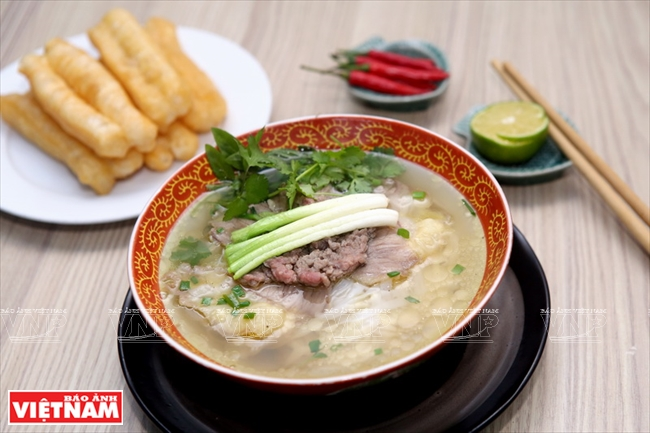

Recent posts
-
Banh xeo Hue

Banh xeo Hue Bánh Xèo is a traditional street food in Vietnam. The working class mainly ate it because it was cheap and easy. Its origins are unknown. However, Vietnamese people agreed that the creation of this dish could be somewhere in Central Vietnam through the fusion of French culture from the French colonial times or South Vietnam by migrating immigrants moving into Vietnam and mixing with the surrounding culture.
View detail -
Pho Hanoi
Pho Hanoi CNNGo emphasized that America has mobile food stalls, but Vietnam is the real “food paradise”. The capital, Hanoi, is placed among the top 10 Asian cities said to have the best street food. Among the delicious street food, pho in Hanoi has been placed at No. 20 among the worlds best 500 culinary experiences by the Lonely Planet travel guide.
View detail -
My Quang
My Quang Mì Quảng (also spelled mỳ Quảng), literally "Quảng noodles", is a Vietnamese noodle dish that originated from Quảng Nam Province in central Vietnam.
View detail